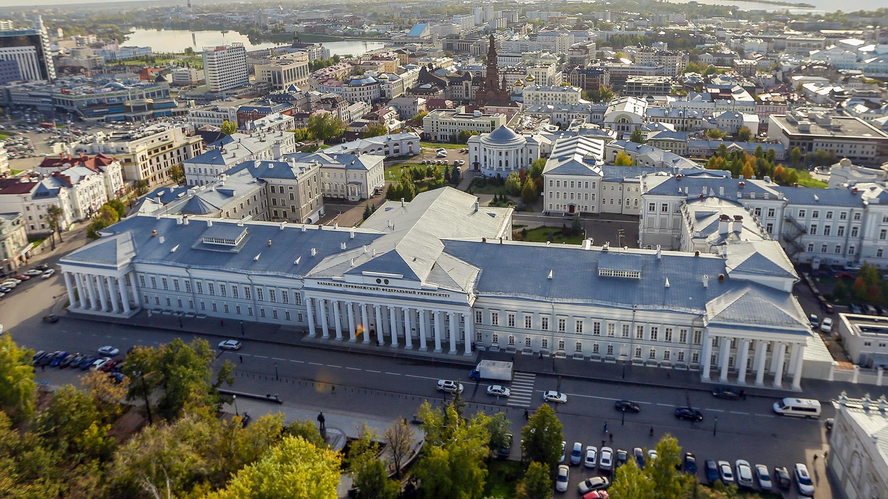

Découverte de Kazan
À propos de Kazan
Kazan est la capitale de la République du Tatarstan en Russie. Connue pour son riche héritage culturel et son architecture unique, la ville est un mélange harmonieux d'influences russes et tatares, offrant une atmosphère vibrante et diverse.
Sites à visiter
- Le Kremlin de Kazan - Un site classé au patrimoine mondial de l'UNESCO, célèbre pour ses murs fortifiés et la magnifique cathédrale de l'Annonciation.
- La mosquée Qol Sharif - Une des plus grandes mosquées de Russie, symbole de la culture tatare.
- Le musée des beaux-arts de Kazan - Une collection impressionnante d'art russe et européen.
- Le parc Millénium - Un parc moderne avec des vues panoramiques sur la Volga et des installations de loisirs.
- La rue Baumana - La rue piétonne principale, animée de boutiques, cafés et artistes de rue.
Photos de Kazan



Conseils pour les étudiants étrangers
Kazan est une ville accueillante pour les étudiants internationaux. Voici quelques conseils utiles :
- Cours de langue : Familiarisez-vous avec quelques mots de russe ou de tatar, cela sera très utile.
- Événements culturels : Participez à des festivals et événements pour plonger dans la culture locale.
- Transports : Le réseau de transport en commun est bien développé et facile à utiliser.
- Cuisine : Ne manquez pas de goûter à la cuisine tatare, notamment les crêpes et le kéfir.
- Réseau d'étudiants : Rejoignez des organisations étudiantes pour rencontrer d'autres étudiants et élargir votre réseau.